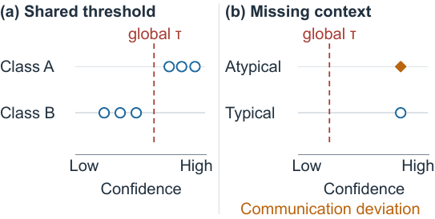
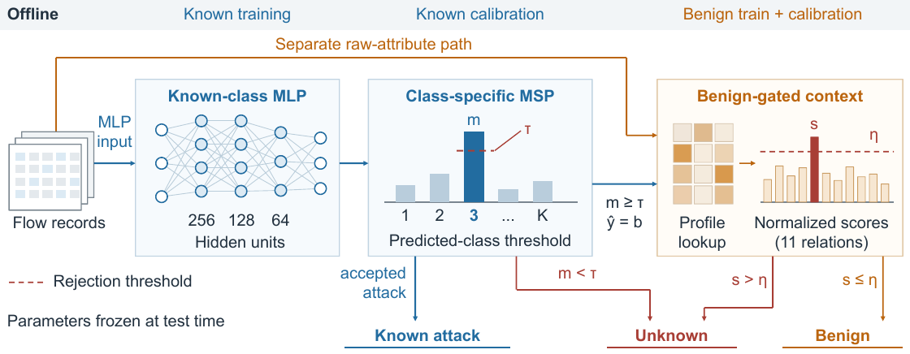

Overview
Known-class confidence can be misleading for unseen attacks: an unknown flow may receive high softmax confidence, particularly when it resembles benign traffic. Our method first applies class-specific maximum softmax probability (MSP) thresholds, then checks communication regularity only for flows predicted as benign.
Compact backbone
A 256-128-64 MLP processes tabular network-flow features.
Class-aware rejection
Each known class receives its own calibration-derived MSP threshold.
Benign-gated context
Eleven benign communication relations provide additional evidence for predicted-benign flows.
Why open-set detection?

Problem illustration. A single global confidence threshold cannot capture class-dependent score distributions and may miss atypical communication behavior.
Method

Framework. Training and calibration are known-only; at test time the MLP and class-specific MSP operate first, and communication context is consulted only for predicted-benign flows.
Reported primary-holdout ablation
Five paired seeds: 42, 52, 62, 72, and 82. Unknown attacks are ARP spoofing and port scanning. Values are mean ± sample standard deviation (%).
| Method | Macro-F1 ↑ | Unknown recall ↑ | Benign FAR ↓ |
|---|---|---|---|
| Closed-set MLP | 68.31 ± 0.84 | 0.00 ± 0.00 | 0.09 ± 0.06 |
| Context only | 71.72 ± 0.91 | 2.49 ± 0.95 | 0.21 ± 0.11 |
| Global MSP | 83.40 ± 6.49 | 68.00 ± 31.14 | 0.15 ± 0.06 |
| Class-specific MSP | 85.25 ± 6.07 | 73.04 ± 31.76 | 5.16 ± 0.54 |
| Global MSP + context | 86.35 ± 5.71 | 70.42 ± 30.54 | 0.26 ± 0.10 |
| Class-specific MSP + context | 86.99 ± 6.00 | 74.27 ± 31.76 | 5.21 ± 0.51 |
The complete method leads macro-F1 and unknown recall among these ablations, but not FAR; this is a stated classification-rejection trade-off.
Reproducibility
The code uses exact observable duplicate-group splitting, frozen configurations, and group-audit files. Farm-Flow is not redistributed; download it from the original Zenodo record and follow its terms.
See reproduction instructions, dataset access, reported results, and the publication checklist.
Limitations
These experiments use one dataset and random duplicate-group-disjoint partitions. They do not establish temporal, cross-device, cross-dataset, full-system-efficiency, or edge-device generalization.